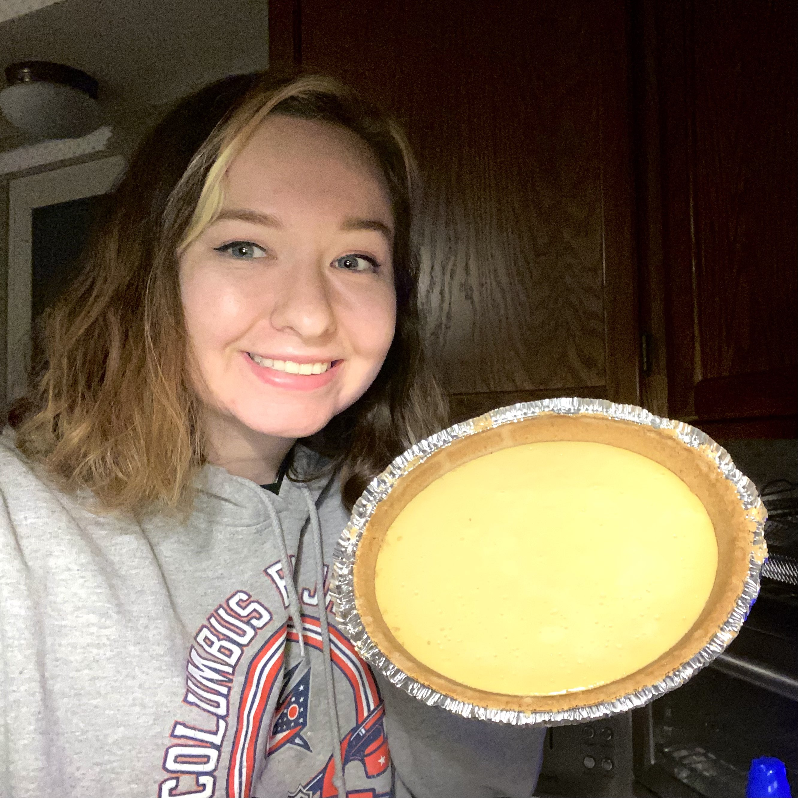
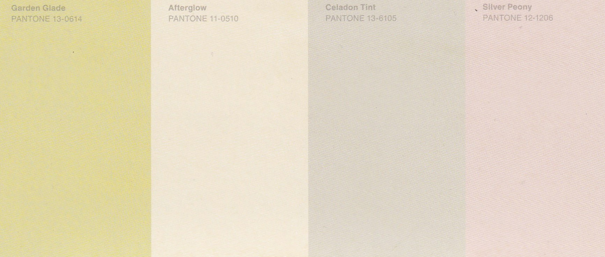
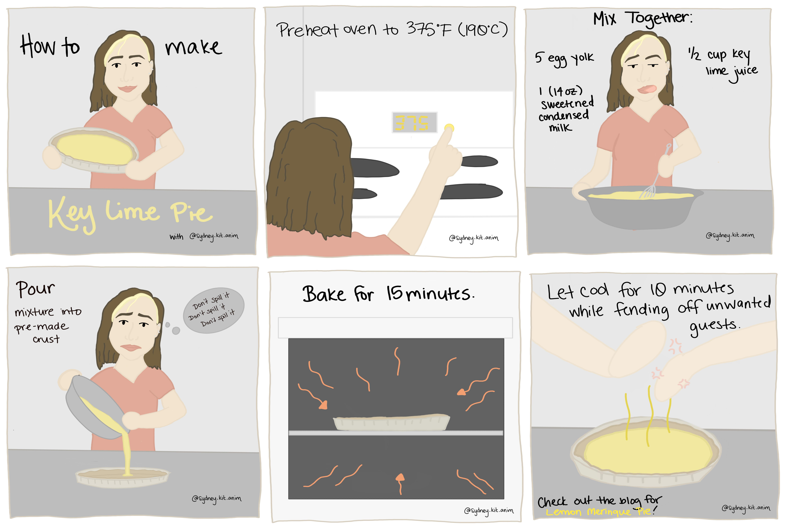

Pie Recipes? I Thought She Made Art!
So, she's baking now?
February 15th, 2022
Baking is art, right?
For those of you that are not familiar with my work, I am creating a comic series called "Color Theory", which is a comic series inspried by you, the audience. Every week I share a new color palette and invite my
audience to share what it reminds them of. I then create three individual comic strips inspired by the responses.

This week, the color palette inspired me to look into how to make the pies that were suggested. (I've been baking and cooking more now that I graduated college, so any new
recipes I can learn, I'm happy to try them!)

I was fortunate enough to have enough time to make the key lime pie myself, but to also be able to create the comic to show the recipe. Although
my intention was to create a whole new comic strip for the Lemon Meringue Pie, it had way too many instructions to make a quick comic strip. If you make any of the pies, share pictures! Tag me on Instagram
or Facebook to show off your wonderful (and tasty) creations!
Without further ado, please
enjoy the recipe for Lemon Meringue Pie.
Lemon Meringue Pie Recipe
Prep Time: 20 Minutes
Bake Time: 90 Minutes
What You Need:
Pre-made pie crust
5 egg yolks and 5 large eggs
7 Tablepoons of Cornstarch
2 Cups of Water
2 Cups of Sugar
1/2 Cup of Lemon Juice
2 Teaspoons of Butter
1 Teaspoon of White Vinegar
1/2 Teaspoon of Vanilla Extract
1/4 Teaspoon of Salt
Step One - The Lemon Filling
Using a medium-sized pan whisk to combine 6 tablespoons cornstarch, 1 1/3 cup sugar, 1/4 teaspoon salt, and 1 1/2 cups water. Bring to a boil using medium heat. Then, let simmer until it begins to thicken.
Whisk together the 5 egg yolks then combine it into the pan while whisking constantly.
Cook for 4 minutes. Then remove from heat.
Combine the 1/2 cup of lemon juice and the 2 tablespoons of butter.
PREHEAT THE OVEN to 325F
Step Two- Make The Meringue
Using a small pan, mix 1 tablespoon cornstarch and 1/3 cup of water then heat until the mixture thickens. Once it's thick remove from heat.
Using a mixer, add the egg whites and vanilla extract. Mix on a low speed and add the sugar and white vinegar.
Once that mixture is done, add the constarch/water mixture from the pan and mix at a high speed.
Step Three - Put It All Together
Reheat the lemon mixture to a boil.
Then add the lemon mixture to the pre-made crust.
Add the meringue using a spatula to the pie starting from the outside working in.
Final Step - Bake
Bake the pie at 325F for 20 minutes, let cool and enjoy!